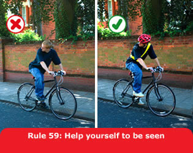

These rules are in addition to those in the following sections, which apply to all vehicles (except the motorway section). See also You and your bicycle.
Clothing. You should wear

At night your cycle MUST have
white front and red rear lights lit. It MUST also be
fitted with a red rear reflector (and amber pedal reflectors, if
manufactured after 1/10/85). White front reflectors and spoke
reflectors will also help you to be seen. Flashing lights are
permitted but it is recommended that cyclists who are riding in areas
without street lighting use a steady front lamp.
Law RVLR regs 13, 18 & 24
Cycle Routes and Other Facilities. Use cycle routes, advanced stop lines, cycle boxes and toucan crossings unless at the time it is unsafe to do so. Use of these facilities is not compulsory and will depend on your experience and skills, but they can make your journey safer.
Cycle Tracks. These are normally located away from
the road, but may occasionally be found alongside footpaths or
pavements. Cyclists and pedestrians may be segregated or they may
share the same space (unsegregated). When using segregated tracks you
MUST keep to the side intended for cyclists as the
pedestrian side remains a pavement or footpath. Take care when
passing pedestrians, especially children, older or disabled people,
and allow them plenty of room. Always be prepared to slow down and
stop if necessary. Take care near road junctions as you may have
difficulty seeing other road users, who might not notice you.
Law HA 1835 sect 72
Cycle Lanes. These are marked by a white line (which may be broken) along the carriageway (see Rule 140). Keep within the lane when practicable. When leaving a cycle lane check before pulling out that it is safe to do so and signal your intention clearly to other road users. Use of cycle lanes is not compulsory and will depend on your experience and skills, but they can make your journey safer.
You MUST NOT cycle on a pavement.
Laws HA 1835 sect 72 & R(S)A 1984, sect 129
Bus Lanes. Most bus lanes may be used by cyclists as indicated on signs. Watch out for people getting on or off a bus. Be very careful when overtaking a bus or leaving a bus lane as you will be entering a busier traffic flow. Do not pass between the kerb and a bus when it is at a stop.
You should
You should
You MUST NOT
You MUST obey all traffic signs and traffic light
signals.
Laws RTA 1988 sect 36 & TSRGD reg 10(1)
When parking your cycle
You MUST NOT cross the stop line when the traffic
lights are red. Some junctions have an advanced stop line to enable
you to wait and position yourself ahead of other traffic (see Rule
178).
Laws RTA 1988 sect 36 & TSRGD regs 10 &
36(1)